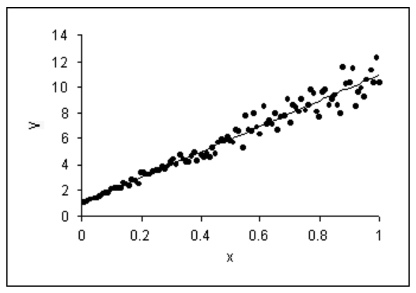
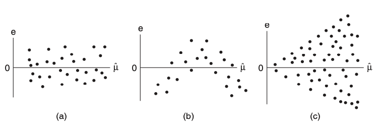

3 Linear models: Misspecification
In our discussion of linear model inference in Chapter 2, we assumed the normal linear model throughout:
\[ \boldsymbol{y} = \boldsymbol{X} \boldsymbol{\beta} + \boldsymbol{\epsilon}, \quad \text{where} \ \boldsymbol{\epsilon} \sim N(\boldsymbol{0}, \sigma^2 \boldsymbol{I}_n). \]
In this unit, we will discuss what happens when this model is misspecified:
- Non-normality (Section 3.1.1): \(\boldsymbol{\epsilon} \sim (0, \sigma^2 \boldsymbol{I}_n)\) but not \(N(0, \sigma^2 \boldsymbol{I}_n)\).
- Heteroskedastic and/or correlated errors (Section 3.1.2): \(\boldsymbol{\epsilon} \sim (0, \boldsymbol{\Sigma})\), where \(\boldsymbol{\Sigma} \neq \sigma^2 \boldsymbol{I}\). This includes the case of heteroskedastic errors (\(\boldsymbol{\Sigma}\) is diagonal but not a constant multiple of the identity) and correlated errors (\(\boldsymbol{\Sigma}\) is not diagonal).
- Model bias (Section 3.1.3): It is not the case that \(\mathbb{E}[\boldsymbol{y}] = \boldsymbol{X} \boldsymbol{\beta}\) for some \(\boldsymbol{\beta} \in \mathbb{R}^p\).
- Outliers (Section 3.1.4): For one or more \(i\), it is not the case that \(y_i \sim N(\boldsymbol{x}_{i*}^T \boldsymbol{\beta}, \sigma^2)\).
For each type of misspecification, we will discuss its origins, consequences, detection, and fixes (Section 3.1.1-Section 3.1.4). We conclude with an R demo (Section 3.6).
3.1 Origins, consequences, diagnostics, and overview of fixes
3.1.1 Non-normality
3.1.1.1 Origin
Non-normality occurs when the distribution of \(y|\boldsymbol{x}\) is either skewed or has heavier tails than the normal distribution. This may happen, for example, if there is some discreteness in \(y\).
3.1.1.2 Consequences
Non-normality is the most benign of linear model misspecifications. While we derived linear model inferences under the normality assumption, all the corresponding statements hold asymptotically without this assumption. Recall Homework 2 Question 1, or take for example the simpler problem of estimating the mean \(\mu\) of a distribution based on \(n\) samples from it: We can test \(H_0: \mu = 0\) and build a confidence interval for \(\mu\) even if the underlying distribution is not normal. So if \(n\) is relatively large and \(p\) is relatively small, you need not worry too much. If \(n\) is small and the errors are highly skewed or heavy-tailed, we may have issues with incorrect standard errors.
3.1.1.3 Detection
Non-normality is a property of the error terms \(\epsilon_i\). We do not observe these directly, but we can approximate them using the residuals:
\[ \widehat{\epsilon}_i = y_i - \boldsymbol{x}_{i*}^T \boldsymbol{\widehat{\beta}}. \]
Recall from Chapter 2 that \(\text{Var}[\boldsymbol{\widehat{\epsilon}}] = \sigma^2(\boldsymbol{I} - \boldsymbol{H})\). Letting \(h_i\) be the \(i\)th diagonal entry of \(\boldsymbol{H}\), it follows that \(\widehat{\epsilon}_i \sim (0, \sigma^2(1-h_i))\). The standardized residuals are defined as:
\[ r_i = \frac{\widehat{\epsilon}_i}{\widehat{\sigma} \sqrt{1-h_i}}. \tag{3.1}\]
Under normality, we would expect \(r_i \overset{\cdot}{\sim} N(0,1)\). We can therefore assess normality by producing a histogram or normal QQ-plot of these residuals (see Figure [-@fig:qqplot]).

3.1.1.4 Fixes
As mentioned above, non-normality is not necessarily a problem that needs to be fixed, except in small samples. In small samples (but not too small!), we can apply the residual bootstrap for robust standard error computation and/or robust hypothesis testing.
3.1.2 Heteroskedastic and correlated errors
3.1.2.1 Origin
Heteroskedasticity can arise as follows. Suppose each observation \(y_i\) is actually the average of \(n_i\) underlying observations, each with variance \(\sigma^2\). Then, the variance of \(y_i\) is \(\sigma^2/n_i\), which will differ across \(i\) if \(n_i\) differ. It is also common to see the variance of a distribution increase as the mean increases (as in Figure [-@fig:heteroskedasticity]), whereas for a linear model the variance of \(y\) stays constant as the mean of \(y\) varies.
Correlated errors can arise when observations have group, spatial, or temporal structure. Below are examples:
- Group/clustered structure: We have 10 samples \((\boldsymbol{x}_{i*}, y_i)\) each from 100 schools.
- Spatial structure: We have 100 soil samples from a \(10\times10\) grid on a 1km \(\times\) 1km field.
- Temporal structure: We have 366 COVID positivity rate measurements, one from each day of the year 2020.
The issue arises because there are common sources of variation among samples that are in the same group or spatially/temporally close to one another.
3.1.2.2 Consequences
All normal linear model inference from Chapter 2 hinges on the assumption that \(\boldsymbol{\epsilon} \sim N(\boldsymbol{0}, \sigma^2 \boldsymbol{I})\). If instead of \(\sigma^2 \boldsymbol{I}\) we have \(\text{Var}[\boldsymbol{\epsilon}] = \boldsymbol{\Sigma}\) for some matrix \(\boldsymbol{\Sigma}\), then we may suffer two consequences: wrong inference (in terms of confidence interval coverage and hypothesis test levels) and inefficient inference (in terms of confidence interval width and hypothesis test power). One way of seeing the consequence of heteroskedasticity for confidence interval coverage is the width of prediction intervals; see Figure [-@fig:heteroskedasticity] for intuition.

Like with heteroskedastic errors, correlated errors can cause invalid standard errors. In particular, positively correlated errors typically cause standard errors to be smaller than they should be, leading to inflated Type-I error rates. For intuition, consider estimating the mean of a distribution based on \(n\) samples. Consider the cases when these samples are independent, compared to when they are perfectly correlated. The effective sample size in the former case is \(n\) and in the latter case is 1.
3.1.2.3 Detection
Heteroskedasticity is usually assessed via the residual plot (Figure [-@fig:residual-plots]). In this plot, the standardized residuals \(r_i\) (3.1) are plotted against the fitted values \(\widehat{\mu}_i\). In the absence of heteroskedasticity, the spread of the points around the origin should be roughly constant as a function of \(\widehat{\mu}\) (Figure -@fig:residual-plots). A common sign of heteroskedasticity is the fan shape where variance increases as a function of \(\widehat{\mu}\) (Figure -@fig:residual-plots).

Residual plots once again come in handy to detect correlated errors. Instead of plotting the standardized residuals against the fitted values, we should plot the residuals against whatever variables we think might explain variation in the response that the regression does not account for. In the presence of group structures, we can plot residuals versus group (via a boxplot); in the presence of spatial or temporal structure, we can plot residuals as a function of space or time. If the residuals show a dependency on these variables, this suggests they are correlated. This dependency can be checked via formal means as well, e.g., via an ANOVA test in the case of groups or by estimating the autocorrelation function in the case of temporal structure.
3.1.3 Model bias
3.1.3.1 Origin
Model bias arises when predictors are left out of the regression model:
\[ \text{assumed model: } \boldsymbol{y} = \boldsymbol{X} \boldsymbol{\beta} + \boldsymbol{\epsilon}; \quad \text{actual model: } \boldsymbol{y} = \boldsymbol{X} \boldsymbol{\beta} + \boldsymbol{Z} \boldsymbol{\gamma} + \boldsymbol{\epsilon}. \tag{3.2}\]
We may not always know about or measure all the variables that impact a response \(\boldsymbol{y}\).
Model bias can also arise when the predictors do not impact the response on the linear scale. For example:
\[ \text{assumed model: } \mathbb{E}[\boldsymbol{y}] = \boldsymbol{X} \boldsymbol{\beta}; \quad \text{actual model: } g(\mathbb{E}[\boldsymbol{y}]) = \boldsymbol{X} \boldsymbol{\beta}. \tag{3.3}\]
3.1.3.2 Consequences
In cases of model bias, the parameters \(\boldsymbol{\beta}\) in the assumed linear model lose their meanings. The least squares estimate \(\boldsymbol{\widehat{\beta}}\) will be a biased estimate for the parameter we probably actually want to estimate. In the case (3.2) when predictors are left out of the regression model, these additional predictors \(\boldsymbol{Z}\) will act as confounders and create bias in \(\boldsymbol{\widehat{\beta}}\) as an estimate of the \(\boldsymbol{\beta}\) parameters in the true model, unless \(\boldsymbol{X}^T \boldsymbol{Z} = 0\). As discussed in Chapter 2, this can lead to misleading conclusions.
3.1.3.3 Detection
Similarly to the detection of correlated errors, we can try to identify model bias by plotting the standardized residuals against predictors that may have been left out of the model. A good place to start is to plot standardized residuals against the predictors \(\boldsymbol{X}\) (one at a time) that are in the model, since nonlinear transformations of these might have been left out. In this case, you would see something like Figure -Figure 3.3.
It is possible to formally test for model bias in cases when we have repeated observations of the response for each value of the predictor vector. In particular, suppose that \(\boldsymbol{x}_{i*} = \boldsymbol{x}_c\) for \(c = c(i)\) and predictor vectors \(\boldsymbol{x}_1, \dots, \boldsymbol{x}_C \in \mathbb{R}^p\). Then, consider testing the following hypothesis:
\[ H_0: y_i = \boldsymbol{x}_{i*}^T \boldsymbol{\beta} + \epsilon_i \quad \text{versus} \quad H_1: y_i = \beta_{c(i)} + \epsilon_i. \]
The model under \(H_0\) (the linear model) is nested in the model for \(H_1\) (the saturated model), and we can test this hypothesis using an \(F\)-test called the lack of fit \(F\)-test.
3.1.3.4 Overview of fixes
To fix model bias in the case (3.2), ideally we would identify the missing predictors \(\boldsymbol{Z}\) and add them to the regression model. This may not always be feasible or possible. To fix model bias in the case (3.3), it is sometimes advocated to find a transformation \(g\) (e.g., a square root or a logarithm) of \(\boldsymbol{y}\) such that \(\mathbb{E}[g(\boldsymbol{y})] = \boldsymbol{X} \boldsymbol{\beta}\). However, a better solution is to use a generalized linear model, which we will discuss starting in Chapter 4.
3.1.4 Outliers
3.1.4.1 Origin
Outliers often arise due to measurement or data entry errors. An observation can be an outlier in \(\boldsymbol{x}\), in \(y\), or both.
3.1.4.2 Consequences
An outlier can have the effect of biasing the estimate \(\boldsymbol{\widehat{\beta}}\). This occurs when an observation has outlying \(\boldsymbol{x}\) as well as outlying \(y\).
3.1.4.3 Detection
There are a few measures associated with an observation that can be used to detect outliers, though none are perfect. The first quantity is called the leverage, defined as:
\[ \text{leverage of observation } i \equiv \text{corr}^2(y_i, \widehat{\mu}_i)^2. \]
This quantity measures the extent to which the fitted value \(\widehat{\mu}_i\) is sensitive to the (noise in the) observation \(y_i\). It can be derived that:
\[ \text{leverage of observation } i = h_i, \]
which is the \(i\)th diagonal element of the hat matrix \(\boldsymbol{H}\). This is related to the fact that \(\text{Var}[\widehat{\epsilon}_i] = \sigma^2(1-h_i)\). The larger the leverage, the smaller the variance of the residual, so the closer the line passes to the \(i\)th observation. The leverage of an observation is larger to the extent that \(\boldsymbol{x}_{i*}\) is far from \(\boldsymbol{\bar{x}}\). For example, in the bivariate linear model \(y_i = \beta_0 + \beta_1 x_i + \epsilon_i\),
\[ h_i = \frac{1}{n} + \frac{(x_i - \bar{x})^2}{\sum_{i' = 1}^n (x_{i'} - \bar{x})^2}. \]
Note that the average of the leverages is:
\[ \frac{1}{n}\sum_{i = 1}^n h_i = \frac{1}{n}\text{trace}(\boldsymbol{H}) = \frac{p}{n}. \]
An observation’s leverage is considered large if it is significantly larger than this, e.g., three times larger.
Note that the leverage is not a function of \(y_i\), so a high-leverage point might or might not be an outlier in \(y_i\) and therefore might or might not have a strong impact on the regression. To assess more directly whether an observation is influential, we can compare the least squares fits with and without that observation. To this end, we define the Cook’s distance:
\[ D_i = \frac{\sum_{i' = 1}^n (\widehat{\mu}_{i'} - \widehat{\mu}^{\text{-}i}_{i'})^2}{p\widehat{\sigma}^2}, \]
where \(\widehat{\mu}^{\text{-}i}_{i'} = \boldsymbol{x}_{i*}^T \boldsymbol{\widehat{\beta}}^{\text{-}i}\) and \(\boldsymbol{\widehat{\beta}}^{\text{-}i}\) is the least squares estimate based on \((\boldsymbol{X}_{\text{-}i,*}, \boldsymbol{y}_{\text{-}i})\). An observation is considered influential if it has Cook’s distance greater than one.
There is a connection between Cook’s distance and leverage:
\[ D_i = \left(\frac{y_i - \widehat{\mu}_i}{\widehat{\sigma} \sqrt{1-h_{ii}}}\right)^2 \cdot \frac{h_{ii}}{p(1-h_{ii})}. \]
We recognize the first term as the standardized residual; therefore a point is influential if its residual and leverage are large.
Note that Cook’s distance may not successfully identify outliers. For example, if there are groups of outliers, then they will mask each other in the calculation of Cook’s distance.
3.1.4.4 Overview of fixes
If outliers can be detected, then the fix is to remove them from the regression. But, we need to be careful. Definitively determining whether observations are outliers can be tricky. Outlier detection can even be used as a way to commit fraud with data, as now-defunct blood testing start-up Theranos is alleged to have done. As an alternative to removing outliers, we can fit estimators \(\boldsymbol{\widehat{\beta}}\) that are less sensitive to outliers; see Section Section 3.5.
3.2 Asymptotic methods for heteroskedastic and correlated errors
Broadly speaking, approaches to fixing heteroskedastic or correlated errors can be divided into (1) those based on estimating \(\boldsymbol{\Sigma}\) and (2) those based on resampling. Methods based on estimating \(\boldsymbol{\Sigma}\) can use this estimate to either (i) build a better estimate \(\boldsymbol{\widehat{\beta}}\) or (ii) build better standard errors for the least squares estimate. Resampling methods include the bootstrap (for estimation) and the permutation test (for testing).
3.2.1 Methods that build a better estimate of \(\boldsymbol{\widehat{\beta}}\)
Suppose \(\boldsymbol{y} \sim N(\boldsymbol{X} \boldsymbol{\beta}, \boldsymbol{\Sigma})\). This is a generalized least squares problem for which inference can be carried out. The generalized least squares estimate is \(\boldsymbol{\widehat{\beta}} = (\boldsymbol{X}^T \boldsymbol{\Sigma}^{-1}\boldsymbol{X})^{-1}\boldsymbol{X}^T \boldsymbol{\Sigma}^{-1}\boldsymbol{y}\), which is distributed as \(\boldsymbol{\widehat{\beta}} \sim N(\boldsymbol{\beta}, (\boldsymbol{X}^T \boldsymbol{\Sigma}^{-1}\boldsymbol{X})^{-1})\). This is the best linear unbiased estimate of \(\boldsymbol{\beta}\), recovering efficiency. We can carry out inference based on the latter distributional result analogously to how we did so in Chapter 2. The issue, of course, is that we usually do not know \(\boldsymbol{\Sigma}\). Therefore, we can consider the following approach: (1) estimate \(\boldsymbol{\widehat{\beta}}\) using OLS, (2) use this estimate to get an estimate \(\boldsymbol{\widehat{\Sigma}}\) of \(\boldsymbol{\Sigma}\), (3) use \(\boldsymbol{\widehat{\Sigma}}\) to get a (hopefully) more efficient estimator
\[ \boldsymbol{\widehat{\beta}}^{\text{FGLS}} \equiv (\boldsymbol{X}^T \boldsymbol{\widehat{\Sigma}}^{-1}\boldsymbol{X})^{-1}\boldsymbol{X}^T \boldsymbol{\widehat{\Sigma}}^{-1}\boldsymbol{y}. \tag{3.4}\]
This is called the feasible generalized least squares estimate (FGLS), to contrast it with the infeasible estimate that assumes \(\boldsymbol{\Sigma}\) is known exactly. The procedure above can be iterated until convergence. To estimate \(\boldsymbol{\widehat{\Sigma}}\), we usually need to make some parametric assumptions. For example, in the case of grouped structure, we might assume a random effects model. In the case of a temporal structure, we might assume an AR(1) model.
3.2.2 Methods that build better standard errors for OLS estimate
Sometimes we don’t feel comfortable enough with our estimate of \(\boldsymbol{\Sigma}\) to actually modify the least squares estimator. So we want to keep using our least squares estimator, but still get standard errors robust to heteroskedastic or correlated errors. There are several strategies to computing valid standard errors in such situations.
3.2.2.1 Sandwich standard errors
Let’s say that \(\boldsymbol{y} = \boldsymbol{X} \boldsymbol{\beta} + \boldsymbol{\epsilon}\), where \(\boldsymbol{\epsilon} \sim N(\boldsymbol{0}, \boldsymbol{\Sigma})\). Then, we can compute that the covariance matrix of the least squares estimate \(\boldsymbol{\widehat{\beta}}\) is
\[ \text{Var}[\boldsymbol{\widehat{\beta}}] = (\boldsymbol{X}^T \boldsymbol{X})^{-1}(\boldsymbol{X}^T \boldsymbol{\Sigma} \boldsymbol{X})(\boldsymbol{X}^T \boldsymbol{X})^{-1}. \tag{3.5}\]
Note that this expression reduces to the usual \(\sigma^2(\boldsymbol{X}^T \boldsymbol{X})^{-1}\) when \(\boldsymbol{\Sigma} = \sigma^2 \boldsymbol{I}\). It is called the sandwich variance because we have the \((\boldsymbol{X}^T \boldsymbol{\Sigma} \boldsymbol{X})\) term sandwiched between two \((\boldsymbol{X}^T \boldsymbol{X})^{-1}\) terms. If we have some estimate \(\boldsymbol{\widehat{\Sigma}}\) of the covariance matrix, we can construct
\[ \widehat{\text{Var}}[\boldsymbol{\widehat{\beta}}] \equiv (\boldsymbol{X}^T \boldsymbol{X})^{-1}(\boldsymbol{X}^T \boldsymbol{\widehat{\Sigma}} \boldsymbol{X})(\boldsymbol{X}^T \boldsymbol{X})^{-1}. \]
Different estimates \(\boldsymbol{\widehat{\Sigma}}\) are appropriate in different situations. Below we consider three of the most common choices: one for heteroskedasticity (due to Huber-White), one for group-correlated errors (due to Liang-Zeger), and one for temporally-correlated errors (due to Newey-West).
3.2.2.2 Specific instances of sandwich standard errors
Huber-White standard errors.
Suppose \(\boldsymbol{\Sigma} = \text{diag}(\sigma_1^2, \dots, \sigma_n^2)\) for some variances \(\sigma_1^2, \dots, \sigma_n^2 > 0\). The Huber-White sandwich estimator is defined by (3.5), with
\[ \boldsymbol{\widehat{\Sigma}} \equiv \text{diag}(\widehat{\sigma}_1^2, \dots, \widehat{\sigma}_n^2), \quad \text{where} \quad \widehat{\sigma}_i^2 = (y_i - \boldsymbol{x}_{i*}^T \boldsymbol{\widehat{\beta}})^2. \]
While each estimator \(\widehat{\sigma}_i^2\) is very poor, Huber and White’s insight was that the resulting estimate of the (averaged) quantity \(\boldsymbol{X}^T \boldsymbol{\widehat{\Sigma}}\boldsymbol{X}\) is not bad. To see why, assume that \((\boldsymbol{x}_{i*}, y_i) \overset{\text{i.i.d.}}{\sim} F\) for some joint distribution \(F\). Then, we have that
\[ \begin{split} \frac{1}{n}(\boldsymbol{X}^T \widehat{\boldsymbol{\Sigma}} \boldsymbol{X} - \boldsymbol{X}^T \boldsymbol{\Sigma} \boldsymbol{X}) &= \frac{1}{n} \sum_{i=1}^n (\widehat{\sigma}_i^2 - \sigma_i^2) \boldsymbol{x}_{i*} \boldsymbol{x}_{i*}^T \\ &= \frac{1}{n} \sum_{i=1}^n ((\epsilon_i + \boldsymbol{x}_{i*}^T(\widehat{\boldsymbol{\beta}} - \boldsymbol{\beta}))^2 - \sigma_i^2) \boldsymbol{x}_{i*} \boldsymbol{x}_{i*}^T \\ &= \frac{1}{n} \sum_{i=1}^n \epsilon_i^2 \boldsymbol{x}_{i*} \boldsymbol{x}_{i*}^T + o_p(1) \\ &\to_p 0. \end{split} \]
The last step holds by the law of large numbers, since \(\mathbb{E}[\epsilon_i^2 \boldsymbol{x}_{i*} \boldsymbol{x}_{i*}^T] = 0\) for each \(i\).
Liang-Zeger standard errors.
Next, let’s consider the case of group-correlated errors. Suppose that the observations are clustered, with correlated errors among clusters but not between clusters. Suppose there are \(C\) clusters of observations, with the \(i\)th observation belonging to cluster \(c(i) \in \{1, \dots, C\}\). Suppose for the sake of simplicity that the observations are ordered so that clusters are contiguous. Let \(\boldsymbol{\widehat{\epsilon}}_c\) be the vector of residuals in cluster \(c\), so that \(\boldsymbol{\widehat{\epsilon}} = (\boldsymbol{\widehat{\epsilon}}_1, \dots, \boldsymbol{\widehat{\epsilon}}_C)\). Then, the true covariance matrix is \(\boldsymbol{\Sigma} = \text{block-diag}(\boldsymbol{\Sigma}_1, \dots, \boldsymbol{\Sigma}_C)\) for some positive definite \(\boldsymbol{\Sigma}_1, \dots, \boldsymbol{\Sigma}_C\). The Liang-Zeger estimator is then defined by (3.5), with
\[ \boldsymbol{\widehat{\Sigma}} \equiv \text{block-diag}(\boldsymbol{\widehat{\Sigma}_1}, \dots, \boldsymbol{\widehat{\Sigma}_C}), \quad \text{where} \quad \boldsymbol{\widehat{\Sigma}_c} \equiv \boldsymbol{\widehat{\epsilon}}_c \boldsymbol{\widehat{\epsilon}}_c^T. \]
Note that the Liang-Zeger estimator is a generalization of the Huber-White estimator. Its justification is similar as well: while each \(\boldsymbol{\widehat{\Sigma}_c}\) is a poor estimator, the resulting estimate of the (averaged) quantity \(\boldsymbol{X}^T \boldsymbol{\widehat{\Sigma}}\boldsymbol{X}\) is not bad as long as the number of clusters is large. Liang-Zeger standard errors are referred to as “clustered standard errors” in the econometrics community.
Newey-West standard errors.
Finally, consider the case when our observations \(i\) have a temporal structure, and we believe there to be nontrivial correlations between \(\epsilon_{i1}\) and \(\epsilon_{i2}\) for \(|i1 - i2| \leq L\). Then, a natural extension of the Huber-White estimate of \(\boldsymbol{\Sigma}\) is \(\boldsymbol{\widehat{\Sigma}}_{i1,i2} = \widehat{\epsilon}_{i1}\widehat{\epsilon}_{i2}\) for each pair \((i1, i2)\) such that \(|i1 - i2| \leq L\). Unfortunately, this is not guaranteed to give a positive semidefinite matrix \(\boldsymbol{\widehat{\Sigma}}\). Therefore, Newey and West proposed a slightly modified estimator:
\[ \boldsymbol{\widehat{\Sigma}}_{i1,i2} = \max\left(0, 1-\frac{|i1-i2|}{L}\right)\widehat{\epsilon}_{i1}\widehat{\epsilon}_{i2}. \]
This estimator shrinks the off-diagonal estimates \(\widehat{\epsilon}_{i1}\widehat{\epsilon}_{i2}\) based on their distance to the diagonal. It can be shown that this modification restores positive semidefiniteness of \(\boldsymbol{\widehat{\Sigma}}\).
3.2.2.3 Inference based on sandwich standard errors
We now have a matrix \(\widehat{\boldsymbol{\Omega}}\) such that
\[ \boldsymbol{\widehat{\beta}} \overset{\cdot}{\sim} N(\boldsymbol{\beta}, \widehat{\boldsymbol{\Omega}}). \]
This allows us to construct confidence intervals and hypothesis tests for each \(\beta_j\), by simply replacing \(\text{SE}(\beta_j)\) with \(\sqrt{\widehat{\Omega}_{jj}}\). For contrasts and prediction intervals, we can use the fact that \(\boldsymbol{c}^T \boldsymbol{\beta} \overset{\cdot}{\sim} N(\boldsymbol{c}^T \boldsymbol{\beta}, \boldsymbol{c}^T \widehat{\boldsymbol{\Omega}} \boldsymbol{c})\), so that \(\text{CE}(\boldsymbol{c}^T \boldsymbol{\beta}) = \sqrt{\boldsymbol{c}^T \widehat{\boldsymbol{\Omega}} \boldsymbol{c}}\). It is less obvious how to use the matrix \(\widehat{\boldsymbol{\Omega}}\) to test the hypothesis \(H_0: \boldsymbol{\beta}_S = \boldsymbol{0}\). To this end, we can use a Wald test (we will discuss Wald tests in more detail in Chapter 4). The Wald test statistic is
\[ W = \boldsymbol{\widehat{\beta}}_S^T (\widehat{\boldsymbol{\Omega}}_{S, S})^{-1} \boldsymbol{\widehat{\beta}}_S, \]
which is asymptotically distributed as \(\chi^2_{|S|}\) under the null hypothesis. It turns out that the usual regression \(F\)-test is asymptotically equivalent to this Wald test.
3.3 The bootstrap
3.3.1 The residual bootstrap
3.3.1.1 Standard errors via the residual bootstrap
The bootstrap is one way of carrying out robust inference. The core idea of the bootstrap is to use the data to construct an approximation to the data-generating distribution and then to approximate the sampling distribution of any test statistic by simulating from this approximate data-generating distribution. This approach, pioneered by Brad Efron in 1979, replaces mathematical derivations with computation. The bootstrap is extremely flexible and can be adapted to apply in a variety of settings.
Suppose that \(y_i = \boldsymbol{x}_{i*}^T \boldsymbol{\beta} + \epsilon_i\), where \(\epsilon_i \overset{\text{i.i.d.}}{\sim} F\) for some distribution \(F\). Then, the data-generating distribution is specified by \((\boldsymbol{\beta}, F)\), which we approximate by substituting \(\boldsymbol{\widehat{\beta}}\) for \(\boldsymbol{\beta}\) and the empirical distribution of the residuals \(\widehat{\epsilon}_i\) (call it \(\widehat{F}\)) for \(F\). We can then sample new response vectors based on this approximate data-generating distribution:
\[ y_i^b = \boldsymbol{x}_{i*}^T \boldsymbol{\widehat{\beta}} + \epsilon_i^b, \quad \epsilon_i^b \overset{\text{i.i.d.}}{\sim} \widehat{F} \quad \text{for } b = 1, \dots, B. \tag{3.6}\]
Note that i.i.d. sampling \(\epsilon_i^b\) from \(\widehat{F}\) amounts to sampling \((\epsilon_1^b, \dots, \epsilon_n^b)\) with replacement from \((\widehat{\epsilon}_1, \dots, \widehat{\epsilon}_n)\). Then, as with the parametric bootstrap, we fit a least squares coefficient vector \(\boldsymbol{\widehat{\beta}}^b\) to \((\boldsymbol{X}, \boldsymbol{y}^b)\) for each \(b\) and obtain standard errors by treating \(\{\boldsymbol{\widehat{\beta}}^b\}_{b = 1}^B\) as though it were the sampling distribution of \(\boldsymbol{\widehat{\beta}}\).
3.3.1.2 Hypothesis testing via the residual bootstrap
While the bootstrap is commonly associated with the construction of standard errors, it can also be used directly for hypothesis testing. Suppose we wish to test the linear regression null hypothesis \(H_0: \boldsymbol{\beta}_S = \boldsymbol{0}\) for some \(S \subseteq \{1, \dots, p-1\}\) (which recall we cannot do using a permutation test). We compute some test statistic \(T(\boldsymbol{X}, \boldsymbol{y})\) measuring the significance of \(\boldsymbol{\beta}_S\) (e.g., an \(F\)-statistic, but it could be anything else). Then, we can use a variant of the residual bootstrap. We fit the least squares estimate \(\boldsymbol{\widehat{\beta}}\) as usual and extract the residuals \(\widehat{\epsilon}_i \equiv y_i - \boldsymbol{x}_{i*}^T \boldsymbol{\widehat{\beta}}\) and their empirical distribution \(\widehat{F}\). Then, placing ourselves under the null hypothesis, we generate new samples \(\boldsymbol{y}^b\) from the null distribution analogously to the usual residual bootstrap (3.6):
\[ y_i^b = \boldsymbol{x}_{i, \text{-}S}^T \boldsymbol{\widehat{\beta}}_{\text{-}S} + \epsilon_i^b, \quad \epsilon_i^b \overset{\text{i.i.d.}}{\sim} \widehat{F} \quad \text{for } b = 1, \dots, B. \]
We can then build a null distribution by recomputing \(T(\boldsymbol{X}, \boldsymbol{y}^b)\) for each \(b\) and then define the bootstrap-based \(p\)-value:
\[ p^{\text{boot}} \equiv \frac{1}{B+1}\left(1+\sum_{b = 1}^B \mathbbm{1}(T(\boldsymbol{X}, \boldsymbol{y}^b) \geq T(\boldsymbol{X}, \boldsymbol{y}))\right). \]
3.3.2 Pairs bootstrap
The residual bootstrap corrects for non-normality but not heteroskedasticity or correlated errors, since it assumes that the noise terms are i.i.d. from some distribution.
Weakening the assumptions further, let’s assume only that \((\boldsymbol{x}_{i*}, y_i) \overset{\text{i.i.d.}}{\sim} F\) for some joint distribution \(F\). We then resample our observations by sampling with replacement from the original observations.
Note that, unlike the parametric or residual bootstrap, the pairs bootstrap treats the predictors \(\boldsymbol{X}\) as random rather than fixed. The benefit of the pairs bootstrap is that it does not assume homoskedasticity since the error variance is allowed to depend on \(\boldsymbol{x}_{i*}\). Therefore, the pairs bootstrap addresses both non-normality and heteroskedasticity, though it does not address correlated errors (though variants of the pairs bootstrap do; see below). Note that the pairs bootstrap does not even assume that \(\mathbb{E}[y_i] = \boldsymbol{x}_{i*}^T \boldsymbol{\beta}\) for some \(\boldsymbol{\beta}\). However, in the presence of model bias, it is unclear for what parameters we are even doing inference. While the pairs bootstrap assumes less than the residual bootstrap, it may be somewhat less efficient in the case when the assumptions of the latter are met.
The pairs bootstrap has several variants that help it overcome correlated errors, in addition to heteroskedasticity. The cluster bootstrap is applicable in the case when errors have a clustered/grouped structure. In this case, we sample entire clusters of observations, with replacement, from the original set of clusters. The moving blocks bootstrap is applicable in the case of spatially or temporally structured errors. In this variant of the pairs bootstrap, we resample spatially or temporally adjacent blocks of observations together to preserve their joint correlation structure.
3.4 The permutation test
Unlike the residual bootstrap, the pairs bootstrap cannot accommodate hypothesis testing. If we would like resampling-based hypothesis tests in the presence of heteroskedasticity, we can consider permutation tests instead. Permutation tests are an easy way of testing the null hypothesis of independence between two random variables (or vectors). For our purposes, suppose that \((\boldsymbol{x}_{i*}, y_i)\) are drawn i.i.d. from some joint distribution \(F\) (as opposed to the usual assumption that \(\boldsymbol{X}\) is fixed). Then, consider the null hypothesis:
\[ H_0: \boldsymbol{x} \perp\!\!\!\perp y. \tag{3.7}\]
This null hypothesis is related to the null hypothesis \(H_0: \boldsymbol{\beta}_{\text{-}0} = 0\) in a linear regression, as formalized by the following lemma.
Lemma 3.1 Suppose \(\boldsymbol{x} \in \mathbb{R}^{p-1}\) has a nondegenerate distribution \(F_{\boldsymbol{x}}\) in the sense that there does not exist a vector \(c \in \mathbb{R}^{p-1}\) such that \(\boldsymbol{c}^T \boldsymbol{x}\) is deterministic. Suppose also that \(F_{y|\boldsymbol{x}}\) is a distribution such that \(\mathbb{E}[y|\boldsymbol{x}] = \beta_0 + \boldsymbol{x}^T \boldsymbol{\beta}_{\text{-}0}\) and that the distribution \(F_{y|\boldsymbol{x}}\) is specified by its mean. Then,
\[ \boldsymbol{x} \perp\!\!\!\perp y \quad \Longleftrightarrow \quad \boldsymbol{\beta}_{\text{-}0} = \boldsymbol{0}. \]
Proof. If \(\boldsymbol{\beta}_{\text{-}0} = \boldsymbol{0}\), then \(\mathbb{E}[y|\boldsymbol{x}] = \beta_0\). Therefore, the mean of \(y\) does not depend on \(\boldsymbol{x}\). By the assumption on \(F_{y|\boldsymbol{x}}\), it follows that the entire distribution \(F_{y|\boldsymbol{x}}\) does not depend on \(\boldsymbol{x}\), i.e., \(y \perp\!\!\!\perp \boldsymbol{x}\). If \(\boldsymbol{\beta}_{\text{-}0} \neq \boldsymbol{0}\), then \(\mathbb{E}[y|\boldsymbol{x}] = \beta_0 + \boldsymbol{x}^T \boldsymbol{\beta}_{\text{-}0}\), which by assumption is non-constant. Since \(\mathbb{E}[y|\boldsymbol{x}]\) depends on \(\boldsymbol{x}\), it follows that \(y\) is not independent of \(\boldsymbol{x}\).
Therefore, any valid independence test automatically gives a non-normality-robust and heteroskedasticity-robust test of \(H_0: \boldsymbol{\beta}_{\text{-}0} = \boldsymbol{0}\) in a linear regression.
Now, suppose we have \(n\) i.i.d. samples \((\boldsymbol{x}_{i*}, y_i)\) from \(F\). Under the independence null hypothesis (3.7), the distribution of the data is unchanged if we permute the response variables \(y_i\). Formally, let \(\boldsymbol{y}_{()}\) be the order statistics of the response variable, let \(S_n\) be the permutation group on \(\{1, \dots, n\}\), and let \(\boldsymbol{y}_\tau\) denote the permutation of \(\boldsymbol{y}\) by \(\tau \in S_n\). Then,
\[ \boldsymbol{y} | \boldsymbol{X}, \boldsymbol{y}_{()} \sim \frac{1}{n!}\sum_{\tau \in S_n} \delta(\boldsymbol{y}_{\tau}). \]
Now, let \(T(\boldsymbol{X}, \boldsymbol{y})\) be any test statistic measuring the association between \(\boldsymbol{y}\) and \(\boldsymbol{X}\), e.g., a linear regression \(F\)-statistic. Then, the above distributional result implies that
\[ T(\boldsymbol{X}, \boldsymbol{y}) | \boldsymbol{X}, \boldsymbol{y}_{()} \sim \frac{1}{n!}\sum_{\tau \in S_n} \delta(T(\boldsymbol{X}, \boldsymbol{y}_{\tau})). \]
Hence, we can compute the null distribution of \(T\) by repeatedly permuting the response \(\boldsymbol{y}\) and recomputing \(T(\boldsymbol{X}, \boldsymbol{y}_{\tau})\). This gives rise to the permutation \(p\)-value:
\[ p^{\text{perm}} \equiv \frac{1}{n!}\sum_{\tau \in S_n} \mathbbm{1}(T(\boldsymbol{X}, \boldsymbol{y}_{\tau}) \geq T(\boldsymbol{X}, \boldsymbol{y})). \]
The uniform distribution of \(T(\boldsymbol{X}, \boldsymbol{y}) | \boldsymbol{X}, \boldsymbol{y}_{()}\) implies that
\[ \mathbb{P}[p^{\text{perm}} \leq t | \boldsymbol{X}, \boldsymbol{y}_{()}] \leq t \quad \Longrightarrow \quad \mathbb{P}[p^{\text{perm}} \leq t] = \mathbb{E}[\mathbb{P}[p^{\text{perm}} \leq t | \boldsymbol{X}, \boldsymbol{y}_{()}]] \leq t \quad \text{for all } t \in [0,1]. \]
In practice, \(p^{\text{perm}}\) is approximated by independently sampling \(B\) permutations \(\tau_1, \dots, \tau_B\) from the uniform distribution over \(S_n\). Letting \(\tau_0\) be the identity permutation, it follows that
\[ \boldsymbol{y} | \boldsymbol{X}, \boldsymbol{y} \in \{\boldsymbol{y}_{\tau_0}, \dots, \boldsymbol{y}_{\tau_B}\} \sim \frac{1}{B+1}\sum_{b = 0}^B \delta(\boldsymbol{y}_{\tau_b}). \]
Similar logic as above leads to the approximate permutation \(p\)-value:
\[ \widehat{p}^{\text{perm}} \equiv \frac{1}{B+1}\sum_{b = 0}^B \mathbbm{1}(T(\boldsymbol{X}, \boldsymbol{y}_{\tau_b}) \geq T(\boldsymbol{X}, \boldsymbol{y})) = \frac{1}{B+1}\left(1 + \sum_{b = 1}^B \mathbbm{1}(T(\boldsymbol{X}, \boldsymbol{y}_{\tau_b}) \geq T(\boldsymbol{X}, \boldsymbol{y}))\right). \tag{3.8}\]
Although \(\widehat{p}^{\text{perm}}\) can be viewed as an approximation to \(\boldsymbol{p}^{\text{perm}}\), it is also stochastically larger than the uniform distribution in finite samples:
\[ \mathbb{P}[\widehat{p}^{\text{perm}} \leq t] \leq t \quad \text{for all } t \in [0,1]. \tag{3.9}\]
Warning: A common mistake is to omit the “1+” in the numerator and denominator of the definition (3.8). The resulting \(p\)-value is not valid in the sense of (3.9).
3.4.1 Example
A common application of the permutation test is testing for equality of distributions in the two-sample problem, where the permutation test amounts to generating a null distribution for any test statistic (e.g., a difference in means) by pooling together the two samples and randomly reassigning the classes of the samples.
3.4.2 Strengths and weaknesses
The strength of the permutation test is that it is valid under almost no assumptions on the data-generating process. Its main weakness is that it is not applicable to the hypothesis \(H_0: \beta_S = 0\) for any group of predictors \(S \neq \{1, \dots, p-1\}\). Intuitively, this would require a fancy kind of permutation that breaks the association between \(\boldsymbol{y}\) and \(\boldsymbol{X}_{*, S}\) while preserving the association between \(\boldsymbol{X}_{*, S}\) and \(\boldsymbol{X}_{*, \text{-}S}\). This amounts to a test of conditional independence, which requires more assumptions on the joint distribution \(F_{\boldsymbol{x}, y}\) than an independence test. Another weakness of a permutation test is that it is computationally expensive, although in the 21st century this is not a huge issue.
3.5 Robust estimation
The squared error loss \(\sum_{i = 1}^n (y_i - \boldsymbol{x}_{i*}^T \boldsymbol{\beta})^2\) is sensitive to outliers in the sense that a large value of \(y_i - \boldsymbol{x}_{i*}^T \boldsymbol{\beta}\) can have a significant impact on the loss function. The least squares estimate, as the minimizer of this loss function, is therefore sensitive to outliers. One way of addressing this challenge is to replace the squared error loss with a different loss that does not grow so quickly in \(y_i - \boldsymbol{x}_{i*}^T \boldsymbol{\beta}\). A popular choice for such a loss function is the Huber loss:
\[ L_\delta(y_i - \boldsymbol{x}_{i*}^T \boldsymbol{\beta}) = \begin{cases} \frac{1}{2}(y_i - \boldsymbol{x}_{i*}^T \boldsymbol{\beta})^2, \quad &\text{if } |y_i - \boldsymbol{x}_{i*}^T \boldsymbol{\beta}| \leq \delta; \\ \delta(|y_i - \boldsymbol{x}_{i*}^T \boldsymbol{\beta}|-\delta), \quad &\text{if } |y_i - \boldsymbol{x}_{i*}^T \boldsymbol{\beta}| > \delta. \end{cases} \]
This function is differentiable, like the squared error loss, but grows linearly as opposed to quadratically. We can then define:
\[ \boldsymbol{\widehat{\beta}}^{\text{Huber}} \equiv \underset{\boldsymbol{\beta}}{\arg \min}\ \sum_{i = 1}^n L_\delta(y_i - \boldsymbol{x}_{i*}^T \boldsymbol{\beta}). \]
This is an M-estimator; it is consistent and has an asymptotic normal distribution that can be used for inference.
3.6 R demo
We illustrate how to deal with heteroskedasticity, group-correlated errors, autocorrelated errors, and outliers in the following sections.
3.6.1 Heteroskedasticity
Next, let’s look at another dataset, from the Current Population Survey (CPS).
library(tidyverse)
cps_data <- read_tsv("data/cps2.tsv")
cps_dataSuppose we want to regress wage on educ, exper, and metro.
lm_fit <- lm(wage ~ educ + exper + metro, data = cps_data)3.6.1.1 Diagnostics
Let’s take a look at the standard linear model diagnostic plots built into R.
# residuals versus fitted
plot(lm_fit, which = 1)
# residual QQ plot
plot(lm_fit, which = 2)
# residuals versus leverage (with Cook's distance)
plot(lm_fit, which = 5)The residuals versus fitted plot suggests significant heteroskedasticity, with variance growing as a function of the fitted value.
3.6.1.2 Sandwich standard errors
To get standard errors robust to this heteroskedasticity, we can use one of the robust estimators discussed in Section 3.1.2. Most of the robust standard error constructions discussed in that section are implemented in the R package sandwich.
library(sandwich)For example, Huber-White’s heteroskedasticity-consistent estimate \(\widehat{\text{Var}}[\boldsymbol{\widehat \beta}]\) can be obtained via vcovHC:
HW_cov <- vcovHC(lm_fit)
HW_covCompare this to the traditional estimate:
usual_cov <- vcovHC(lm_fit, type = "const")
usual_cov
# extract the variance estimates from the diagonal
tibble(
variable = rownames(usual_cov),
usual_variance = sqrt(diag(usual_cov)),
HW_variance = sqrt(diag(HW_cov))
)Bootstrap standard errors are also implemented in sandwich:
# pairs bootstrap
bootstrap_cov <- vcovBS(lm_fit, type = "xy")
tibble(
variable = rownames(usual_cov),
usual_variance = diag(usual_cov),
HW_variance = diag(HW_cov),
bootstrap_variance = diag(bootstrap_cov)
)The covariance estimate produced by sandwich can be easily integrated into linear model inference using the package lmtest.
library(lmtest)
# fit linear model as usual
lm_fit <- lm(wage ~ educ + exper + metro, data = cps_data)
# robust t-tests for coefficients
coeftest(lm_fit, vcov. = vcovHC)
# robust confidence intervals for coefficients
coefci(lm_fit, vcov. = vcovHC)
# robust F-test
lm_fit_partial <- lm(wage ~ educ, data = cps_data) # a partial model
waldtest(lm_fit_partial, lm_fit, vcov = vcovHC)3.6.1.3 Bootstrap confidence intervals
One R package for performing bootstrap inference is simpleboot. Let’s see how to get pairs bootstrap distributions for the coefficient estimates.
library(simpleboot)
boot_out <- lm.boot(
lm.object = lm_fit, # input the fit object from lm()
R = 1000
) # R is the number of bootstrap replicates
perc(boot_out) # get the percentile 95% confidence intervalsWe can extract the resampling distributions for the coefficient estimates using the samples function:
samples(boot_out, name = "coef")[, 1:5]We can plot these as follows:
boot_pctiles <- boot_out |>
perc() |>
t() |>
as.data.frame() |>
rownames_to_column(var = "var") |>
filter(var != "(Intercept)")
samples(boot_out, name = "coef") |>
as.data.frame() |>
rownames_to_column(var = "var") |>
filter(var != "(Intercept)") |>
pivot_longer(-var, names_to = "resample", values_to = "coefficient") |>
group_by(var) |>
ggplot(aes(x = coefficient)) +
geom_histogram(bins = 30, colour = "black") +
geom_vline(aes(xintercept = `2.5%`), data = boot_pctiles, linetype = "dashed") +
geom_vline(aes(xintercept = `97.5%`), data = boot_pctiles, linetype = "dashed") +
facet_wrap(~var, scales = "free")In this case, the bootstrap sampling distributions look roughly normal.
3.6.4 Outliers
Let’s take a look at the crime data from HW2:
# read crime data
crime_data <- read_tsv("data/Statewide_crime.dat")
# read and transform population data
population_data <- read_csv("data/state-populations.csv")
population_data <- population_data |>
filter(State != "Puerto Rico") |>
select(State, Pop) |>
rename(state_name = State, state_pop = Pop)
# collate state abbreviations
state_abbreviations <- tibble(
state_name = state.name,
state_abbrev = state.abb
) |>
add_row(state_name = "District of Columbia", state_abbrev = "DC")
# add CrimeRate to crime_data
crime_data <- crime_data |>
mutate(STATE = ifelse(STATE == "IO", "IA", STATE)) |>
rename(state_abbrev = STATE) |>
left_join(state_abbreviations, by = "state_abbrev") |>
left_join(population_data, by = "state_name") |>
mutate(CrimeRate = Violent / state_pop) |>
select(state_abbrev, CrimeRate, Metro, HighSchool, Poverty)
crime_dataLet’s fit the linear regression:
# note: we make the state abbreviations row names for better diagnostic plots
lm_fit <- lm(CrimeRate ~ Metro + HighSchool + Poverty, data = crime_data |> column_to_rownames(var = "state_abbrev"))We can get the standard linear regression diagnostic plots as follows:
# residuals versus fitted
plot(lm_fit, which = 1)
# residual QQ plot
plot(lm_fit, which = 2)
# residuals versus leverage (with Cook's distance)
plot(lm_fit, which = 5)The information underlying these diagnostic plots can be extracted as follows:
tibble(
state = crime_data$state_abbrev,
std_residual = rstandard(lm_fit),
fitted_value = fitted.values(lm_fit),
leverage = hatvalues(lm_fit),
cooks_dist = cooks.distance(lm_fit)
)Clearly, DC is an outlier. We can either run a robust estimation procedure or redo the analysis without DC. Let’s try both. First, we try robust regression using rlm() from the MASS package:
rlm_fit <- MASS::rlm(CrimeRate ~ Metro + HighSchool + Poverty, data = crime_data)
summary(rlm_fit)For some reason, the p-values are not computed automatically. We can compute them ourselves instead:
summary(rlm_fit)$coef |>
as.data.frame() |>
rename(Estimate = Value) |>
mutate(`p value` = 2 * dnorm(-abs(`t value`)))To see the robust estimation action visually, let’s consider a univariate example:
lm_fit <- lm(CrimeRate ~ Metro, data = crime_data)
rlm_fit <- MASS::rlm(CrimeRate ~ Metro, data = crime_data)
# collate the fits into a tibble
line_fits <- tibble(
method = c("Usual", "Robust"),
intercept = c(
coef(lm_fit)["(Intercept)"],
coef(rlm_fit)["(Intercept)"]
),
slope = c(
coef(lm_fit)["Metro"],
coef(rlm_fit)["Metro"]
)
)# usual and robust univariate fits
# plot the fits
crime_data |>
ggplot() +
geom_point(aes(x = Metro, y = CrimeRate)) +
geom_abline(aes(intercept = intercept, slope = slope, colour = method), data = line_fits)Next, let’s try removing DC and running a usual linear regression.
lm_fit_no_dc <- lm(CrimeRate ~ Metro + HighSchool + Poverty,
data = crime_data |>
filter(state_abbrev != "DC") |>
column_to_rownames(var = "state_abbrev")
)
# residuals versus fitted
plot(lm_fit_no_dc, which = 1)
# residual QQ plot
plot(lm_fit_no_dc, which = 2)
# residuals versus leverage (with Cook's distance)
plot(lm_fit_no_dc, which = 5)